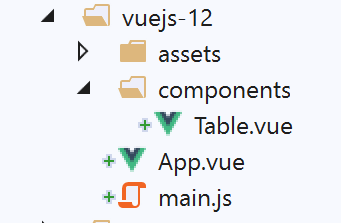
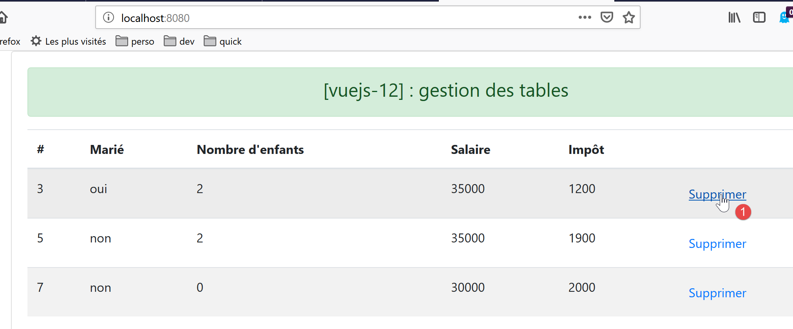

14. Projekt [vuejs-12]: Verwaltung von HTML-Tabellen
Die Verzeichnisstruktur des Projekts [vuejs-12] sieht wie folgt aus:

14.1. Das Hauptskript [main.js]
Das Hauptskript kehrt zu dem zurück, was es in den früheren Projekten war:
// imports
import Vue from 'vue'
import App from './App.vue'
// plugins
import BootstrapVue from 'bootstrap-vue'
Vue.use(BootstrapVue);
// bootstrap
import 'bootstrap/dist/css/bootstrap.css'
import 'bootstrap-vue/dist/bootstrap-vue.css'
// configuration
Vue.config.productionTip = false
// instanciation projet [App]
new Vue({
name: "app",
render: h => h(App),
}).$mount('#app')
14.2. Die Hauptansicht [App]
Der Code für die Hauptansicht [App] lautet wie folgt:
<template>
<div class="container">
<b-card>
<!-- message -->
<b-alert show variant="success" align="center">
<h4>[vuejs-12] : gestion des tables</h4>
</b-alert>
<!-- table component -->
<Table @supprimerLigne="supprimerLigne" :lignes="lignes" @rechargerListe="rechargerListe" />
</b-card>
</div>
</template>
<script>
import Table from "./components/Table";
export default {
// nom
name: "app",
// composants utilisés
components: {
Table
},
// état interne
data() {
return {
// liste des simulations
lignes: [
{ id: 3, marié: "oui", enfants: 2, salaire: 35000, impôt: 1200 },
{ id: 5, marié: "non", enfants: 2, salaire: 35000, impôt: 1900 },
{ id: 7, marié: "non", enfants: 0, salaire: 30000, impôt: 2000 }
]
};
},
// méthodes
methods: {
// suppression d'une ligne
supprimerLigne(index) {
// eslint-disable-next-line
console.log("App supprimerLigne", index);
// suppression ligne à la position [index]
this.lignes.splice(index, 1);
},
// rechargement de la table des lignes
rechargerListe() {
// eslint-disable-next-line
console.log("App rechargerListe");
// on régénère la liste des lignes
this.lignes = [
{ id: 3, marié: "oui", enfants: 2, salaire: 35000, impôt: 1200 },
{ id: 5, marié: "non", enfants: 2, salaire: 35000, impôt: 1900 },
{ id: 7, marié: "non", enfants: 0, salaire: 30000, impôt: 2000 }
];
}
}
};
</script>
Kommentare
- Die Hauptansicht zeigt eine [Table]-Komponente an (Zeilen 9, 15, 21);
- Zeile 9: Die [Table]-Komponente akzeptiert den Parameter [:rows], der die in einer HTML-Tabelle anzuzeigenden Zeilen angibt. Diese Zeilen werden durch die Zeilen 27–31 des Codes definiert;
- Zeile 9: Die [Table]-Komponente kann zwei Ereignisse auslösen:
- [deleteRow]: zum Löschen einer Zeile durch Angabe ihres Index (Zeile 38);
- [reloadList]: zum Neugenerieren der Liste in den Zeilen 27–31. Tatsächlich werden wir sehen, dass der Benutzer einige der angezeigten Zeilen löschen kann;
- Zeilen 38–43: Die Methode, die für die Verarbeitung des [deleteRow]-Ereignisses zuständig ist. Sie erhält den Index der zu löschenden Zeile als Parameter;
- Zeilen 45–54: die Methode, die für die Behandlung des [reloadList]-Ereignisses zuständig ist. Durch die Änderung des Attributs [rows] in Zeile 27 lösen wir eine Aktualisierung der [Table]-Komponente in Zeile 9 aus, da diese einen Parameter [:rows="rows"] hat;
14.3. Die [Table]-Komponente
Die [Table]-Komponente sieht wie folgt aus:
<template>
<div>
<!-- empty list -->
<template v-if="lignes.length==0">
<b-alert show variant="warning">
<h4>Votre liste de simulations est vide</h4>
</b-alert>
<!-- reload button-->
<b-button variant="primary" @click="rechargerListe">Recharger la liste</b-button>
</template>
<!-- non-empty list-->
<template v-if="lignes.length!=0">
<b-alert show variant="primary" v-if="lignes.length==0">
<h4>Liste de vos simulations</h4>
</b-alert>
<!-- simulation table -->
<b-table striped hover responsive :items="lignes" :fields="fields">
<template v-slot:cell(action)="row">
<b-button variant="link" @click="supprimerLigne(row.index)">Supprimer</b-button>
</template>
</b-table>
</template>
</div>
</template>
<script>
export default {
// propriétés
props: {
lignes: {
type: Array
}
},
// état interne
data() {
return {
fields: [
{ label: "#", key: "id" },
{ label: "Marié", key: "marié" },
{ label: "Nombre d'enfants", key: "enfants" },
{ label: "Salaire", key: "salaire" },
{ label: "Impôt", key: "impôt" },
{ label: "", key: "action" }
]
};
},
// méthodes
methods: {
// suppression d'une ligne
supprimerLigne(index) {
// eslint-disable-next-line
console.log("Table supprimerLigne", index);
// on passe l'information au composant parent
this.$emit("supprimerLigne", index);
},
// rechargement de la liste affichée
rechargerListe() {
// eslint-disable-next-line
console.log("Table rechargerListe");
// on émet un événement vers le composant parent
this.$emit("rechargerListe");
}
}
};
</script>
Kommentare
Diese Komponente hat zwei Zustände:
- sie zeigt eine Liste in einer HTML-Tabelle an;
- oder eine Meldung, die darauf hinweist, dass die anzuzeigende Liste leer ist;
Der erste Zustand wird angezeigt, wenn die Bedingung [lines.length!=0] wahr ist (Zeile 12):

Der zweite wird angezeigt, wenn die Bedingung [lines.length==0] wahr ist (Zeile 4).

- [lines] ist ein Eingabeparameter der Komponente (Zeilen 29–33);
- Zeilen 4–10: Anstelle eines Codeblocks mit einem <div>-Tag haben wir hier ein <template>-Tag verwendet. Der Unterschied zwischen den beiden besteht darin, dass das <template>-Tag nicht in den generierten HTML-Code aufgenommen wird;
- Zeile 9: Wenn die von der HTML-Tabelle angezeigte Liste leer ist, bietet eine Schaltfläche an, sie zu aktualisieren. Wenn diese Schaltfläche angeklickt wird, wird die Methode [reloadList] in den Zeilen 57–62 ausgeführt. Diese Methode sendet lediglich das Ereignis [reloadList] an die übergeordnete Komponente, wodurch diese angewiesen wird, die von der HTML-Tabelle angezeigte Liste neu zu generieren;
- Zeilen 12–22: Der Code, der angezeigt wird, wenn die anzuzeigende Liste nicht leer ist;
- Zeile 17: Das <b-table>-Tag ist das Tag, das eine HTML-Tabelle generiert. Die hier verwendeten Attribute lauten wie folgt:
- [striped]: Die Hintergrundfarbe der Zeilen wechselt. Es gibt eine Farbe für gerade Zeilen und eine andere für ungerade Zeilen. Dies verbessert die Lesbarkeit;
- [hover]: Die Zeile, über der sich der Mauszeiger befindet, ändert ihre Farbe;
- [responsive]: Die Größe der Tabelle passt sich an den Bildschirm an, auf dem sie angezeigt wird;
- [:items]: das Array der anzuzeigenden Elemente. Hier wird das Array [rows] als Parameter an die Komponente übergeben (Zeilen 30–32);
- [:fields]: ein Array, das das Layout der HTML-Tabelle definiert (Zeilen 37–44);
- Jedes Element im Array [fields] definiert eine Spalte in der HTML-Tabelle;
- [label]: gibt die Spaltenüberschrift an;
- [key]: gibt den Inhalt der Spalte an;
- Zeile 38: definiert Spalte 0 der HTML-Tabelle:
- [#]: ist die Spaltenüberschrift;
- [id]: ist ihr Inhalt. Es ist das [id]-Feld der angezeigten Zeile, das Spalte 0 füllt;
- Zeile 39: definiert Spalte 1 der HTML-Tabelle:
- [Married]: ist die Spaltenüberschrift;
- [married]: ist ihr Inhalt. Es ist das Feld [married] der angezeigten Zeile, das Spalte 0 füllt;
- Zeile 43: definiert die letzte Spalte der HTML-Tabelle:
- Die Spalte hat keinen Titel;
- ihr Inhalt wird durch ein [action]-Feld definiert, ein Feld, das in den angezeigten Zeilen nicht existiert. Auf diesen Schlüssel wird in Zeile 18 der [template] verwiesen. Der Schlüssel dient hier also ausschließlich dazu, eine Spalte zu identifizieren;
- Zeilen 18–20: Dieser Code dient zur Definition der letzten Spalte der HTML-Tabelle, nämlich der Spalte mit dem Schlüssel [action]:
<template v-slot:cell(action)="row">
Die Syntax [v-slot:cell(action)] bezieht sich auf die Spalte mit dem Schlüssel [action]. Mit dieser Syntax können Sie eine Spalte definieren, wenn die Array-Syntax [fields] nicht ausreicht, um sie zu beschreiben. Hier soll die letzte Spalte einen Link enthalten, über den Sie eine Zeile aus der HTML-Tabelle löschen können:

In der Syntax [<template v-slot:cell(action)="row">] bezieht sich der Name [row] auf die Tabellenzeile. Sie können einen beliebigen Namen verwenden. Wir hätten auch [<template v-slot:cell(action)="row">] schreiben können;
- Zeile 19: ein <b-button>, der als Link [variant='link'] angezeigt wird. Ein Klick auf diesen Link löst die Ausführung der Methode [supprimerLigne(row.index)] aus. Hier ist [row] der Name, der der Zeile in der HTML-Tabelle gegeben wurde, Zeile 18 des Codes;
- Zeilen 50–55: die Methode [deleteRow];
- Zeile 54: Das Ereignis [deleteRow] wird zusammen mit der Nummer der zu löschenden Zeile an die übergeordnete Komponente gesendet;
- Zeilen 57–62: die Methode [reloadList];
- Zeile 61: Das Ereignis [reloadList] wird an die übergeordnete Komponente gesendet;
14.4. Ausführen des Projekts

Die erste angezeigte Ansicht sieht wie folgt aus:

Nach dem Löschen von Zeile 1 [1] sieht die Ansicht wie folgt aus:

Nach dem Löschen aller Zeilen:

Nach dem Klicken auf die Schaltfläche [2] wird die Liste wiederhergestellt: